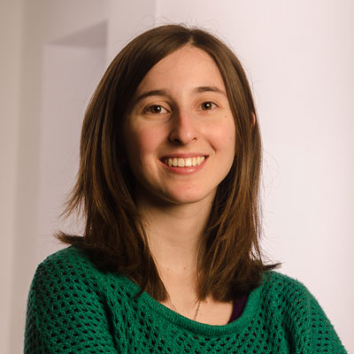

Ingenieria de Software
Ana Laura Felisatti
Desde CET queremos visibilizar a mujeres que lideran y trabajan en áreas en STEAM* ciencia, tecnología, ingeniería, arte y matemáticas (por su acrónimo en inglés science, technology, engineering, art and mathematics). y emprendedorismo, con el objetivo de descubrir talentos de toda la Argentina. Por eso, reunimos más de 60 perfiles de mujeres en tecnología y ciencia. Leer más
¡Te invitamos a conocerlas a través de sus trabajos y dejarte inspirar con sus consejos!